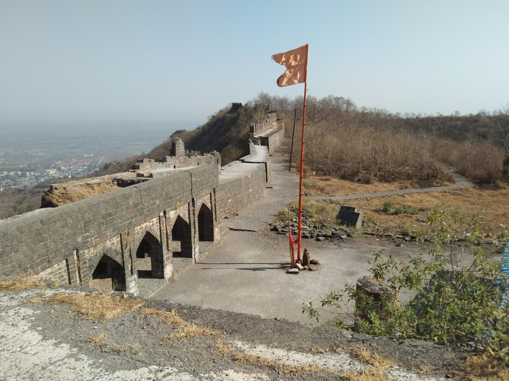
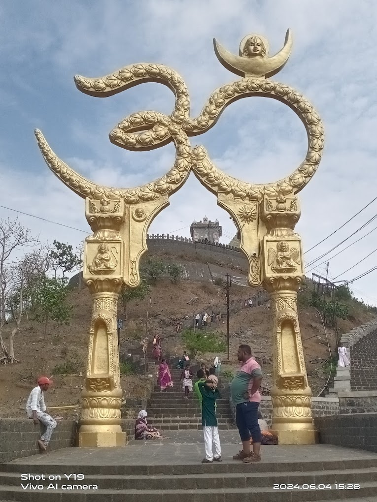

माहूरगड किल्ला
Location : Click Here For Google Map
- माहिती
- माहूरगड किल्ला हा महाराष्ट्रातील एक ऐतिहासिक किल्ला आहे, जो नांदेड जिल्ह्यात स्थित आहे. हा किल्ला ऐतिहासिकदृष्ट्या महत्त्वाचा आहे आणि त्या ठिकाणी असलेले धार्मिक महत्त्व देखील त्याला एक वेगळा ओळख देतात. महुरगड किल्ला विशेषतः महुरी देवीच्या मंदिरासाठी प्रसिद्ध आहे, ज्याला स्थानिक लोक पूजा अर्चा करतात.
किल्ल्याच्या बांधणीचा कालखंड प्राचीन आहे, आणि या किल्ल्याच्या स्थापत्यकलेमध्ये मराठा काळाचा प्रभाव दिसतो. महुरगड किल्ला उच्च शिखरावर वसला असून, त्याच्या वावरणामुळे संपूर्ण परिसरावर दृष्य नजरेत येते. किल्ल्याच्या भिंती आणि दुर्गाची रचना त्याच्या संरक्षणासाठी आदर्श ठरली आहे.
माहूरगड किल्ल्याच्या परिसरात महुरी देवीचे मंदिर असले तरी, किल्ल्याचे वास्तुकले आणि किल्ल्यावर असलेले इतर संरचनांचे अवशेष देखील पर्यटकांना आकर्षित करतात. किल्ल्याच्या उंचीवरून संपूर्ण नांदेड जिल्ह्याचा देखावा मनमोहक आहे, जो पर्यटकांसाठी एक उत्कृष्ट अनुभव प्रदान करतो.
आजकाल, महुरगड किल्ला एक प्रमुख पर्यटक स्थल बनला आहे. धार्मिक महत्त्व, ऐतिहासिकता आणि किल्ल्याच्या शांतीपूर्ण वातावरणामुळे, येथे अनेक भक्त आणि इतिहासप्रेमी येतात. किल्ल्याच्या प्राचीन वास्तू आणि ठिकाणांचा अनुभव घेण्यासाठी हे ठिकाण एक उत्तम गंतव्य आहे.
Explore the historical beauty


